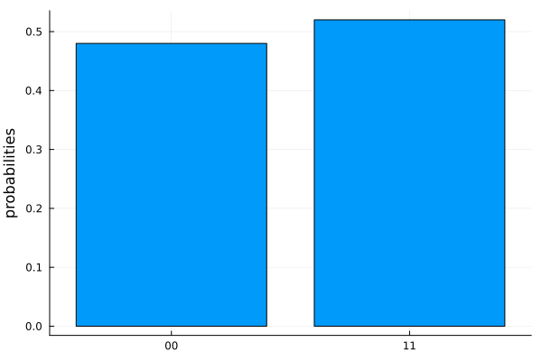

Getting Started
Typical workflow
A typical workflow to execute a quantum circuit on a quantum service consists of these three steps.
Create: Build the circuit using quantum gates.
Transpile: Transpile the circuit to improve performance and make the circuit compatible with the quantum service.
Execute: Run the compiled circuits on the specified quantum service. The quantum service could be a remote quantum hardware or a local simulator.
Create a Circuit
Now, let's try Qanuk by making a two-qubit circuit which implements a Bell/EPR state. The quantum circuit for generating a Bell state involves a Hadamard gate on one of the qubits followed by a CNOT gate (see https://en.wikipedia.org/wiki/Quantumlogicgate for an introduction to quantum logic gates). This circuit is shown below:

First import Qanuk:
using QanukWith Qanuk imported, we can define our two-qubit circuit.
c = QuantumCircuit(qubit_count=2)
print(c)
# output
Quantum Circuit Object:
qubit_count: 2
q[1]:
q[2]:In Qanuk, all qubits start in state $\left|0\right\rangle$. Our circuit is, therefore, in state $\left|00\right\rangle$. We now proceed by adding gates to our circuit.
push!(c, hadamard(1), control_x(1, 2))
print(c)
# output
Quantum Circuit Object:
qubit_count: 2
q[1]:──H────*──
|
q[2]:───────X──The first line adds a Hadamard gate to circuit object c which will operate on qubit 1. The second line adds a CNOT gate (Control-X gate) with qubit 1 as the control qubit and qubit 2 as the target qubit.
Unlike C++ or Python, indexing in Julia starts from "1" and not "0"!
Simulate your circuit
The next step we want to take is to simulate our circuit. We do not need to transpile our circuit since our simulator can handle all gates, but for larger circuit you should consider transpilation to reduce the amount of work the simulator has to perform.
ψ = simulate(c)
print(ψ)
# output
4-element Ket{ComplexF64}:
0.7071067811865475 + 0.0im
0.0 + 0.0im
0.0 + 0.0im
0.7071067811865475 + 0.0imFinally, you can use SnowflakePlots to generate a histogram which shows the measurement output distribution after taking a certain number of shots, in this case 100, on a quantum computer simulator:
using SnowflakePlots
plot_histogram(c, 100)
The script below puts all the steps above together:
using Qanuk, SnowflakePlots
c = QuantumCircuit(qubit_count=2)
push!(c, [hadamard(1)])
push!(c, [control_x(1, 2)])
ψ = simulate(c)
plot_histogram(ψ, 100)Execute on Anyon's hardware
Let's see how how to run the circuit created in the previous section on real hardware. At
We want to interact with Anyon's Quantum Computers, so we are going to construct an AnyonQPU. Three things are needed to construct an AnyonQPU. We need the username and access token to authenticate with the quantum computer and the hostname where the quantum computer can be found. The easiest way to get these parameters is by reading them from environment variables. For more information on QPU objects please go to the Get QPU Metadata tutorial.
user = ENV["ANYON_QUANTUM_USER"]
token = ENV["ANYON_QUANTUM_TOKEN"]
host = ENV["ANYON_QUANTUM_HOST"]
qpu = AnyonQPU(host=host, user=user, access_token=token)
print(qpu)
# output
Quantum Processing Unit:
manufacturer: Anyon Systems Inc.
generation: Yukon
serial_number: ANYK202201
qubit_count: 6
connectivity_type: linearWe can now run our circuit with
num_repetitions = 200
result = transpile_and_run_job(qpu, circuit, num_repetitions)and plot the results with
plot_histogram(result)The script below puts all the steps above together:
using Qanuk, SnowflakePlots
user = ENV["ANYON_QUANTUM_USER"]
token = ENV["ANYON_QUANTUM_TOKEN"]
host = ENV["ANYON_QUANTUM_HOST"]
qpu = AnyonQPU(host=host, user=user, access_token=token)
circuit = QuantumCircuit(qubit_count=2)
push!(circuit, [hadamard(1)])
push!(circuit, [control_x(1, 2)])
num_repetitions = 200
result = transpile_and_run_job(qpu, circuit, num_repetitions)
plot_histogram(result)More information
For more information head over to our Tutorials page or our Library reference page.